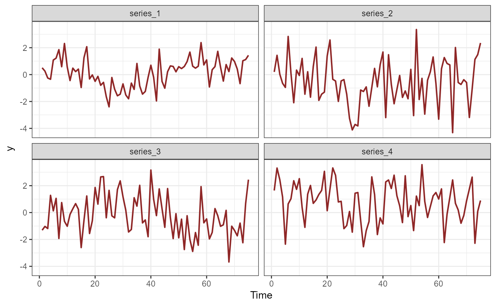
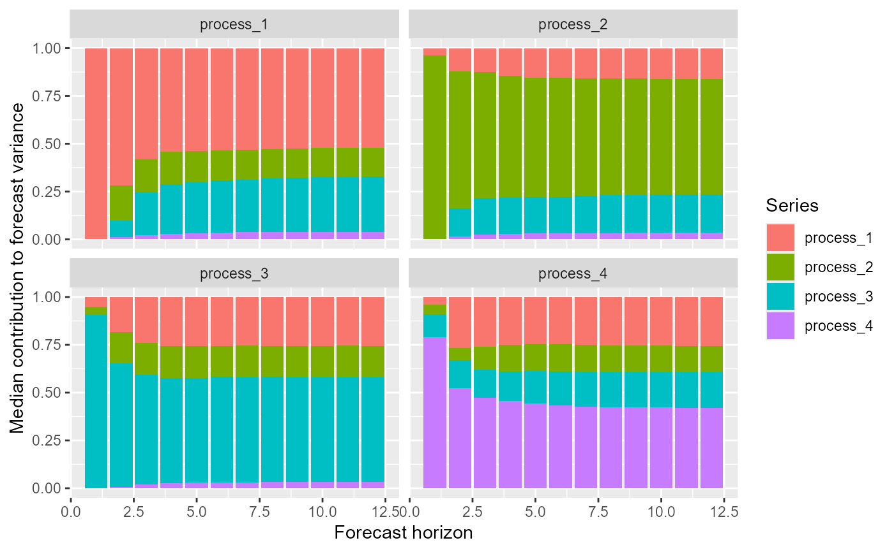

Compute forecast error variance decompositions from
mvgam models with Vector Autoregressive dynamics
Arguments
- object
listobject of classmvgamresulting from a call tomvgam()that used a Vector Autoregressive latent process model (either asVAR(cor = FALSE)orVAR(cor = TRUE))- ...
ignored
- h
Positive
integerspecifying the forecast horizon over which to calculate the IRF
Value
An object of class mvgam_fevd containing the posterior forecast error
variance decompositions. This
object can be used with the supplied S3 functions plot
Details
A forecast error variance decomposition is useful for quantifying the amount of information each series that in a Vector Autoregression contributes to the forecast distributions of the other series in the autoregression. This function calculates the forecast error variance decomposition using the orthogonalised impulse response coefficient matrices \(\Psi_h\), which can be used to quantify the contribution of series \(j\) to the h-step forecast error variance of series \(k\): $$ \sigma_k^2(h) = \sum_{j=1}^K(\psi_{kj, 0}^2 + \ldots + \psi_{kj, h-1}^2) \quad $$ If the orthogonalised impulse reponses \((\psi_{kj, 0}^2 + \ldots + \psi_{kj, h-1}^2)\) are divided by the variance of the forecast error \(\sigma_k^2(h)\), this yields an interpretable percentage representing how much of the forecast error variance for \(k\) can be explained by an exogenous shock to \(j\).
References
Lütkepohl, H (2006). New Introduction to Multiple Time Series Analysis. Springer, New York.
Examples
# \donttest{
# Simulate some time series that follow a latent VAR(1) process
simdat <- sim_mvgam(family = gaussian(),
n_series = 4,
trend_model = VAR(cor = TRUE),
prop_trend = 1)
plot_mvgam_series(data = simdat$data_train, series = 'all')

# Fit a model that uses a latent VAR(1)
mod <- mvgam(y ~ -1,
trend_formula = ~ 1,
trend_model = VAR(cor = TRUE),
family = gaussian(),
data = simdat$data_train,
silent = 2)
#> In file included from stan/lib/stan_math/stan/math/prim/prob/von_mises_lccdf.hpp:5,
#> from stan/lib/stan_math/stan/math/prim/prob/von_mises_ccdf_log.hpp:4,
#> from stan/lib/stan_math/stan/math/prim/prob.hpp:359,
#> from stan/lib/stan_math/stan/math/prim.hpp:16,
#> from stan/lib/stan_math/stan/math/rev.hpp:16,
#> from stan/lib/stan_math/stan/math.hpp:19,
#> from stan/src/stan/model/model_header.hpp:4,
#> from C:/Users/uqnclar2/AppData/Local/Temp/Rtmp2bnpq5/model-3cd03809ed7.hpp:2:
#> stan/lib/stan_math/stan/math/prim/prob/von_mises_cdf.hpp: In function 'stan::return_type_t<T_x, T_sigma, T_l> stan::math::von_mises_cdf(const T_x&, const T_mu&, const T_k&)':
#> stan/lib/stan_math/stan/math/prim/prob/von_mises_cdf.hpp:194: note: '-Wmisleading-indentation' is disabled from this point onwards, since column-tracking was disabled due to the size of the code/headers
#> 194 | if (cdf_n < 0.0)
#> |
#> stan/lib/stan_math/stan/math/prim/prob/von_mises_cdf.hpp:194: note: adding '-flarge-source-files' will allow for more column-tracking support, at the expense of compilation time and memory
# Calulate forecast error variance decompositions for each series
fevds <- fevd(mod, h = 12)
# Plot median contributions to forecast error variance
plot(fevds)

# }